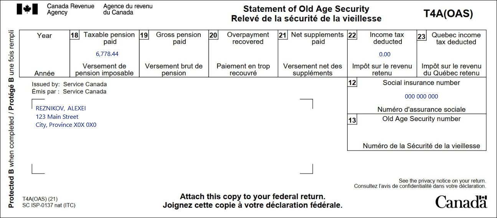
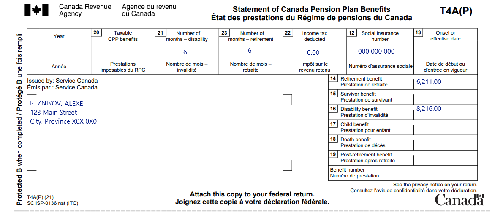

Claiming nursing home fees
Pre-test question
Sorry, that's incorrect
Alexei must choose to either claim the DTC or the nursing home fees for full-time care as a medical expense, but cannot claim both.
That's correct
Alexei must choose to either claim the DTC or the nursing home fees for full-time care as a medical expense, but cannot claim both.
Instructions
- Open the tax software
- Review the Background information and Required slips (tax slips, receipts, etc.)
- Provide all required information for the appropriate sections of the tax software
- Once completed, compare your results with the solution provided
- Afterwards, refer to the Takeaway points
Background information
Situation
Alexei received CPP and OAS benefits while living in a nursing home for all of 2022. He pays $16,200 per year to the nursing home. The receipt provided by the nursing home is not broken down for meals, accommodation, or attendant care services. Alexei has been previously approved for the disability tax credit (DTC).
Identification information
| Name | Alexei Reznikov |
|---|---|
| Social insurance number (SIN) | 000 000 000 |
| Address | 123 Main Street City, Province X0X 0X0 |
| Date of birth | February 4, 1962 |
| Marital status | Divorced |
Required slips
T4A(OAS) – Statement of Old Age Security (for Alexei)
Text version of the T4A (OAS) slip
T4A(OAS) – Statement of Old Age Security
Protected B
Issued by: Service Canada
Reznikov, Alexei
123 Main Street
City Province X0X 0X0
Box 12: Social insurance number: 000 000 000
Box 18: Taxable pension paid: 6,778.44
Box 22: Income tax deducted: 0.00
T4A(P) – Statement of Canada Pension Plan Benefits (for Alexei)
Text version of the T4A(P) slipn
T4A(P) – Statement of Canada Pension Plan Benefits
Protected B
Sent by: Service Canada
Reznikov, Alexei
123 Main Street
City Province X0X 0X0
Box 12: Social insurance number: 000 000 000
Box 21: Number of months – disability: 6
Box 23: Number of months – retirement: 6
Box 22: Income tax deducted: 0.00
Box 14: Retirement benefit: 6,211.00
Box 16: Disability benefit: 8,216.00
Review your results
Solutions will be available Feb 2023 via link to PDF.
Takeaway points
Steps to follow
- Review their background information and required slips
- In Interview setup, tick the boxes next to Pension income, other income and split pension income, COVID-19 benefits (T4A, T4A(OAS), T4A(P), T4-RCA, T4RSP, T4RIF,T1032) in the Pension section and Medical expenses, disability, caregiver in the Common tax deductions section
- Click T4A and pension income in the left-side menu and click the + signs next to T4A(OAS), T4A(P) and Split pension income with spouse to enter the amounts for each tax slip
- Alexei’s T4A(P) indicates he received both CPP retirement and disability benefits throughout the year; the sum of box 23 and box 21 (number of months) cannot exceed 12, so enter a 6 into both the box 23 and box 21 fields
- Click Medical, disability, caregiver in the left-side menu and click the + sign next to Medical expenses in the Medical expenses section
- Click Medical expenses in the left-side menu to enter the nursing home fees next to the Fees for a residential and long-term care centre field
For more information refer to UFile instructions.